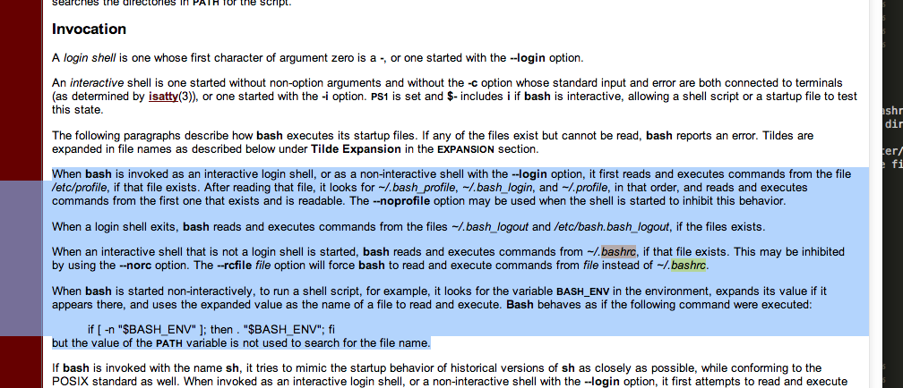

2. Installing Dependencies¶
Usually, Macs already have python installed by default. To check if you have python on your mac, open up terminal, and do python in the terminal. If python is installed you should see a python console show up, displaying the version number of python. The version number should be at least 2.7 or higher. If python is not installed, you should see an error message show up. However, you may or may not have some necessary packages installed.
2.1. Github¶
Optional but recommended.
The latest version of AIMBAT will be on Github, so it would be good to get Git on your computer. This is not strictly necessary, as you could also download it as a zipfile from the AIMBAT website.
Some users may already have Git installed, but if not, you can download the package installer here. This would allow only command line usage of Git, so if you want to use a GUI, we recommend Git for Mac.
2.2. Macports¶
Macports will be needed to install some python packages. Download the package installer here.
2.3. Homebrew¶
Homebrew will be needed to install some python packages. Get it by typing in your terminal:
brew install wget
2.4. Getting your operating system¶
We assume that most users of AIMBAT will be using macs. If our assumptions are wrong, please contact the authors, and if there is sufficient interest we will construct documentation for installations on other operating systems as well.
On a mac, to find the version of your operating system, first click on the apple icon on the top bar of your desktop, go to System Preferences, and click on Startup Disk. The operating system version should then be displayed.
2.5. Python Dependencies¶
Required for AIMBAT #. Numpy: Used for manipulating numbers and datasets #. Scipy: Used for data processing #. Matplotlib: Used for the majority of the plots in AIMBAT and the GUI
To check if you have python already, open the terminal and type python. If a console pops up, it should display the version of python you have. If not, the terminal will output:
-bash: python: command not found
If python is installed, you next need to check if the required packages are there. Open the python console by typing in the terminal:
python
Now, type:
import numpy
import scipy
import matplotlib
If any of the packages are missing (e.g. scipy not installed), the python console will output an error:
Traceback (most recent call last):
File "<stdin>", line 1, in <module>
ImportError: No module named scipy
Otherwise, the python console will simply show that it is ready for the next command.
2.6. Installing Basic Python Packages¶
2.6.1. Enthought Python¶
Strongly recommended.
Enthought Canopy is easy to install. Go to the website and download the free version of Express Enthought Canopy, which will give you the dependencies Numpy, Scipt, and Matplotlib.
2.6.2. If you cannot use Enthought Canopy ...¶
This section describes a possible way to install Python without using Enthough Canopy. It is not recommended and may cause problems on some systems, but the authors describe it just in case.
Use Macports to install the necessary python libraries for AIMBAT. If you just upgraded your operating system, you need to upgrade Macports and re-install the libraries as well.
Inside the terminal, once python is installed, type these commands in using sudo mode. Note you will need to enter your admin password.:
sudo port install python27
sudo port install py27-numpy sudo port install py27-scipy sudo port install py27-matplotlib
sudo port install py27-ipythonsudo port install python_select
Installing the last two packages is optional. ipython is an enhanced interactive python shell. python_select is used to select default Python version by the following command:
port select --set python python27
You need this version, not other versions on your computer, since this is the one that has the libraries AIMBAT needs.
- The package manager brew caused many problems when tried. If you figured it out properly, please contact the authors with instructions~ In general, the authors do not recommend trying to install the packages separately when there are Python versions that will come with all the packages pre-installed already. Scipy is especially tricky as it relies on Fortran and C as well. The authors of scipy recommend using Enthought Canopy or Anacoda to install it.
2.7. Installing Basemap (Python dependency)¶
Disclaimer: Lifted from content written by this guy with some tweaks.
Enthough Python should get you most of the dependencies needed. You do need to get Geos though. The best way to get it is install Homebrew, and then install gdal, a package that has Geos as a dependency. To get gdal, do:
brew install gdal
Now install Basemap. Download it here. Unzip the package and cd into the unzipped package. To install basemap, do:
sudo python setup.py build
sudo python setup.py install
To check it worked, at the terminal, do:
python
and then:
from mpl_toolkits.basemap import Basemap
2.8. Possible Issues¶
Here some common problems and possible resolutions. If your problem is not listed here, or you have a suggestion, please contact the authors.
2.8.1. Macports¶
You may run into problems with AIMBAT if your Macport version is not compatible with your operating system version. For example, if you used Macports for OS X 10.8 to install AIMBAT, then upgraded your operating system or OS X 10.9, you may find that AIMBAT no longer works properly. You will need to upgrade Macports to fix this error.
Do not uninstall MacPorts unless you know what you are doing, uninstalling MacPorts may get rid of other programs you installed using MacPorts. However, if you are sure you want to do so, see here for instructions.
2.8.2. Installing Python with Pip¶
Be careful with the operating system. For OS X 10.9 and above, Python 2.7 is not fully compatible and there may be problems installing python with Pip. Best to use Enthought Canopy or Python 3 with OS X 10.9.
2.8.3. Setting the Python Path to the scripts¶
You are asked to add the path to the AIMBAT scripts in your file. To do that, you add them to the .bashrc file. There are other files you could add it to that work as well, such as the .profile or .bash_profile files. You can see the files by opening the terminal and doing ls -a to see all the hidden files, and open then by doing vi .bashrc in vim, for instance. To ensure you can open a script, you need to add:
export PATH=$PATH:<path-to-folder-with-scripts>
export PYTHONPATH=$PYTHONPATH:<path-to-folder-with-scripts>
to the .bashrc file. We recommend adding the paths to the .bashrc file.
2.8.4. Terminal Commands stop working¶
If ever the terminal commands such as ls stop working in the terminal, it could be that something went wrong with a path in the .bashrc or .profile files. If that happens you may not be able to open them in vim as that command would have stopped working as well. Instead, in the terminal, you do:
PATH=/bin:${PATH}
PATH=/usr/bin:${PATH}
And that should allow the commands to start working again. Figure out what you did wrong and remove that command.
2.8.5. Installing Enthought Canopy¶
Occasionally, Enthought Canopy may not open the default setup environment after you downloaded and tried to install it. If this happens, open the Canopy package, go to “Preferences”, and select Canopy as your default environment.

2.8.6. Uninstalling Enthought Canopy¶
The official Enthought gives suggestions on uninstalling here.

STEPS:
- From the Canopy preferences menu, unset Canopy as your default Python.
- For each Canopy user, delete the following directory which contains that user’s “System” and “User” virtual environment subdirections.
- Delete Canopy from the Applications folder.
- Clean up the hidden files. Delete anything referencing Canopy or Enthought in the hidden files, as evidence by referencing ls -a in your home directory. Check the .bashrc and .profile directories first. If Enthought is not completely gone, this happens if you call Python.
- (Optional). Keep doing which python and cleaning the python files that show up, until which python gives you nothing when you type it in the terminal.
2.8.7. Path to python files not found¶
After adding the path to your directory with scripts in .bashrc, you still need to source the .bashrc files in .profile, or the system may not find the directory. See here for more details to see how the profile file is sourced. Note that this one will override the file in /etc/profile.
This explanation explains how the bashrc file is sourced.
This is what the bashrc and profile files should look like on your home directory: